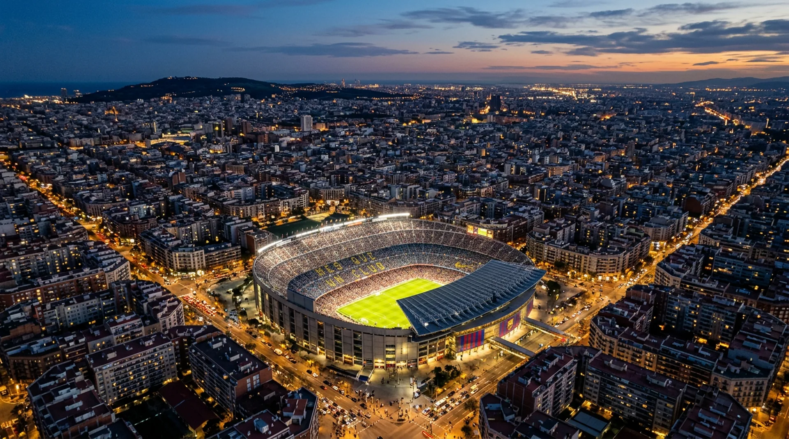
FC Barcelona's legendary home is mid-transformation: a rebuild that preserves its lower two tiers while adding a completely new third tier and full roof, on track to become Europe's largest football stadium at 105,000 seats.
Architecture & Design
A 2016 international design competition for Camp Nou's transformation was won by Japanese firm Nikken Sekkei together with Joan Pascual - Ramon Ausió Arquitectes, with the final project developed further by Barcelona Studio, IDOM and b720. The design preserves the stadium's original lower two tiers while completely rebuilding a new third tier, engineered to reach a uniform height around the entire perimeter, unlike the old stadium's asymmetric profile.
The rebuilt stadium introduces a circular open facade inspired by Catalan modernism, letting natural light flood the interior, alongside a full roof, the first Camp Nou has ever had covering the entire seating bowl, fitted with photovoltaic panels across 45,000 square metres for renewable energy generation.
The renovation, part of FC Barcelona's wider Espai Barça modernisation of its facilities, was originally budgeted at approximately €1.45-1.5 billion, financed through a syndicate of 20 investors with repayments structured over five to twenty-four years. By mid-2026, Spanish media reported the club may need to seek additional financing from its members as construction costs continued rising beyond the original estimate.
The build sits on the same footprint as the 1957 original, an unusual choice compared with Barcelona's neighbours across Spain. Santiago Bernabéu's own renovation kept Real Madrid playing at home almost continuously behind a fully enclosed shell, while FC Barcelona instead vacated the site entirely for over two years, relocating to the Estadi Olímpic Lluís Companys on Montjuïc while the lower bowl was stripped back for the new structure to rise around it.
Turkish contractor Limak Holding leads construction on site, working alongside the original design team to translate the competition-winning scheme into the phased, occupied building site fans now walk into on matchdays. Cranes, exposed steelwork and construction hoarding remain part of the everyday backdrop, a contrast to the finished bowl most fans picture when they hear "Camp Nou."
The predecessor ground, Les Corts, was demolished after Camp Nou opened in 1957 and its site redeveloped into the residential and commercial blocks that make up part of today's Les Corts district, a few streets from the current stadium. Little visible trace of the old stadium remains beyond street names and local memory.
Planning a trip around this stadium? See the full Barcelona guide →
Search Barcelona Hotels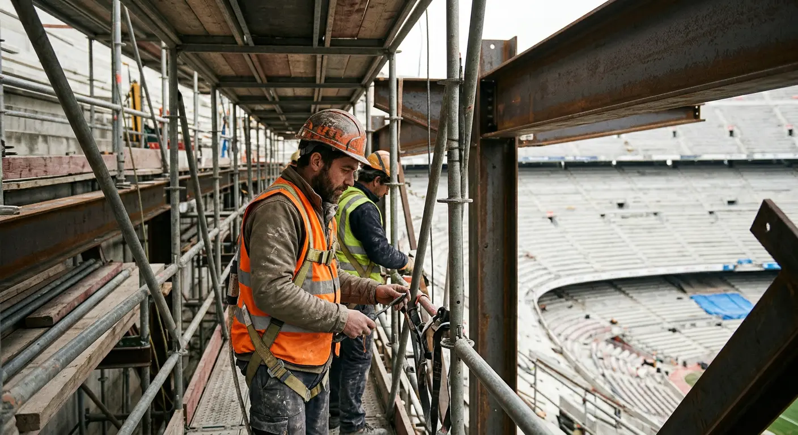
It's a markedly different strategy from Lisbon's Estádio da Luz, which was built new in a single continuous project rather than reopened gradually around live matchdays, or Morocco's ground-up new builds like Hassan II Stadium.
"We are incredibly proud. It will be the best stadium in Europe."
- Joan Laporta, FC Barcelona president, February 2026The project has faced real construction and financial headwinds: over 200 safety issues were flagged during recent inspections, the reopening was pushed back multiple times, and reports through mid-2026 suggest the club may need additional financing beyond the original budget as costs continue to rise. On the pitch, the atmosphere has kept pace with the rebuild: the Grada d'Animació singing section has returned to the ground, and on 10 May 2026 a sold-out 62,652 crowd, the largest at the venue since the renovation began, watched Barcelona beat Real Madrid to confirm back-to-back La Liga titles in front of their own fans.
What We Don't Know Yet
The exact final completion date and confirmed total project cost remain moving targets given repeated delays and reported financing gaps. We'll update this page as FC Barcelona and Barcelona City Council confirm further milestones.
The club's giant stadium flag and the roar that greets the team walking out under a still-partial roof are as central to the Camp Nou experience today as they were before the rebuild began. Since the club severed formal ties with its previous organised ultras group over years of documented violence and extremism, official matchday atmosphere has centred on the Grada d'Animació, a club-recognised collective bringing together supporter groups including Almogàvers, Front 532, Nostra Ensenya and Supporters Barça. In March 2026 the section relocated from Gol Nord to a new first-tier stand in Gol Sud named Gol 1957, after the year Camp Nou first opened, holding between 800 and 1,000 fans. They lead chants and choreography, though tensions periodically flare with the club over fines for flares and offensive chanting and over how much space the section is allotted as capacity expands in stages.
El Clásico against Real Madrid remains the single loudest occasion at the ground; the 10 May 2026 title-clinching win drew the biggest and loudest crowd the rebuilt stadium had seen to that point. Derby days against Espanyol and European nights against clubs like Bayern Munich or Inter Milan carry their own distinct charge, still audible even with the reduced current capacity.
Full Barcelona GuideCamp Nou replaced Les Corts stadium, which could no longer accommodate the crowds drawn by the arrival of Hungarian forward László Kubala in 1950. The stadium has been expanded twice before: between 1980 and 1982, ahead of that year's World Cup in Spain, the third tier was extended around the whole ground, and in 1993-94 the lower tier was rebuilt, the pitch lowered, and remaining standing areas removed. Camp Nou is a leading candidate to host the 2030 World Cup final, alongside Santiago Bernabéu in Madrid, Hassan II Stadium in Casablanca, and Portugal's own contenders, Estádio da Luz and Estádio do Dragão.
The stadium is the home of Barcelona's FC Barcelona and, even mid-renovation, remains one of the most visited non-religious sites in Spain, drawing an estimated 1.5-2 million visitors a year through its museum and tours. Camp Nou also entered the race to host the 2029 UEFA Champions League final, competing against Wembley Stadium for UEFA's selection.
Rivalled in size only by Morocco's still-under-construction Hassan II Stadium (115,000), that scale alone makes Camp Nou a genuine Final contender, alongside Santiago Bernabéu, though as with Madrid's bid, nothing is officially confirmed and FIFA has said a decision on the Final's venue won't come until closer to the tournament.
The stadium's construction timeline, now targeting full completion around April 2027 with the Third Lateral Stand due to open in September 2026, gives Barcelona a comfortable buffer before 2030, assuming no further major delays, something the project's history to date suggests is worth watching closely.
"Barcelona has always had a great ambition to host major sporting events."
- Jaume Collboni, Mayor of Barcelona, February 2026From Central Barcelona
Exact matchday shuttle and transport plans will be confirmed by FIFA and Spanish authorities closer to 2030. Check back here for updates.
Find It on the Map
🇪🇸 Spain
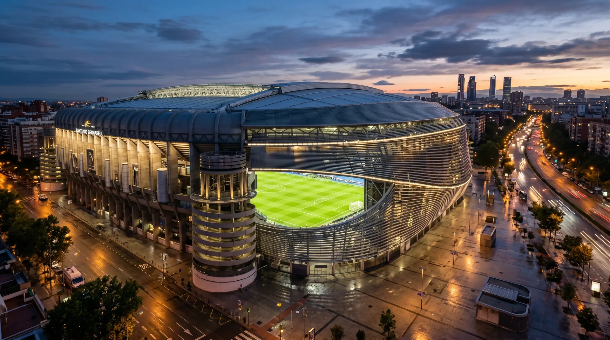
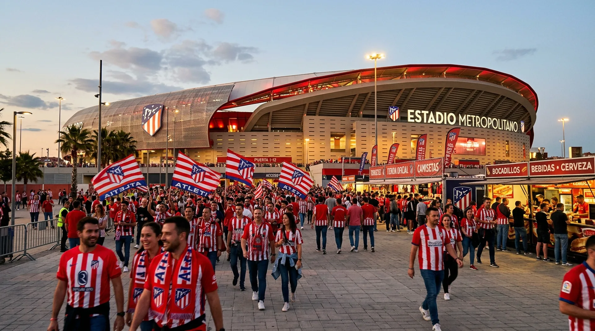
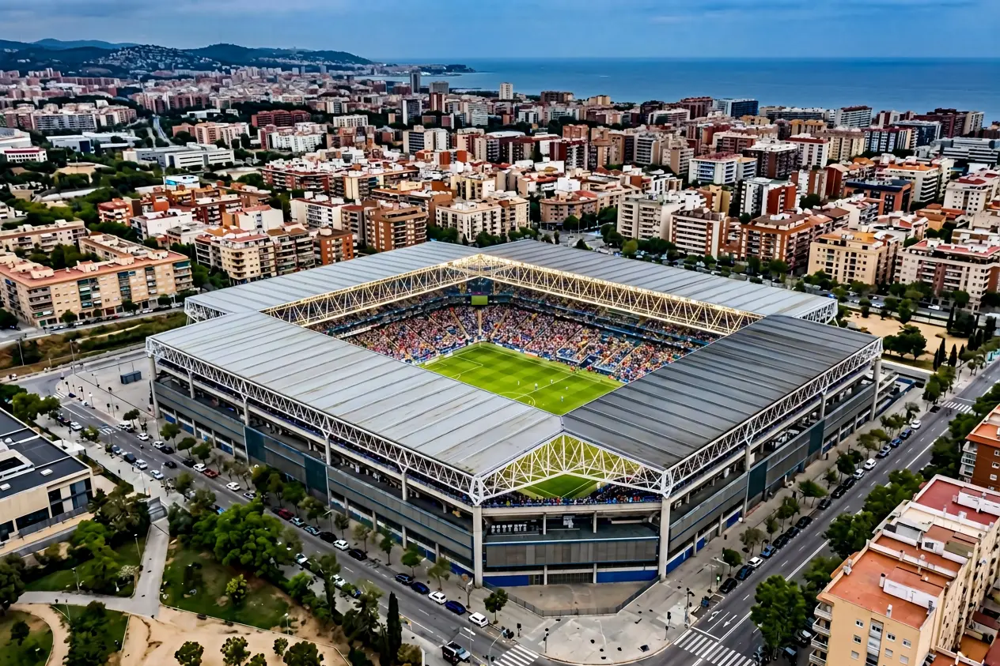
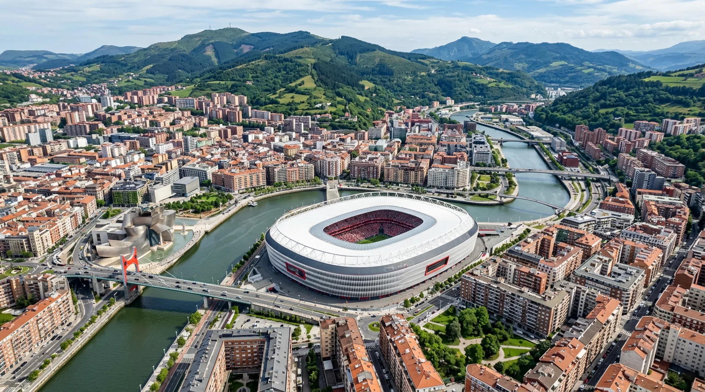
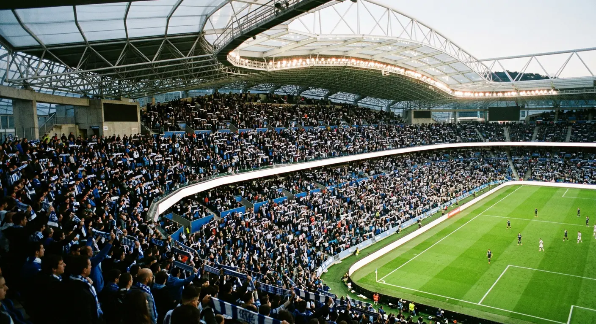
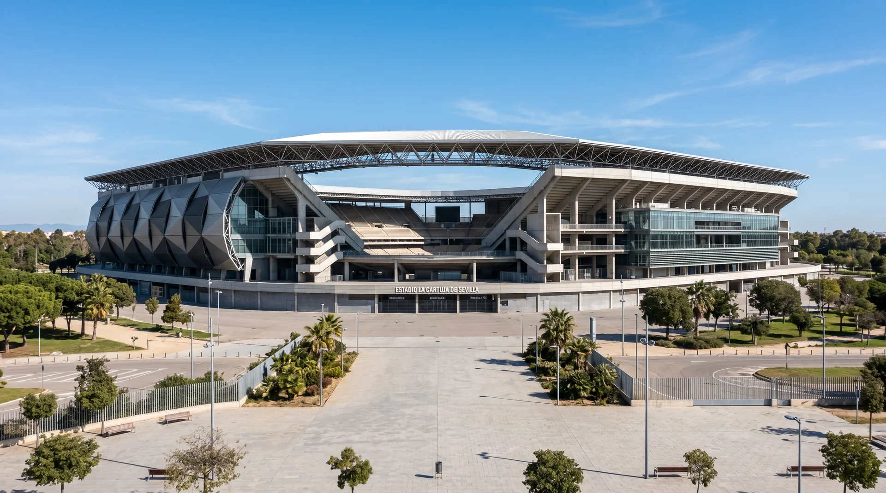
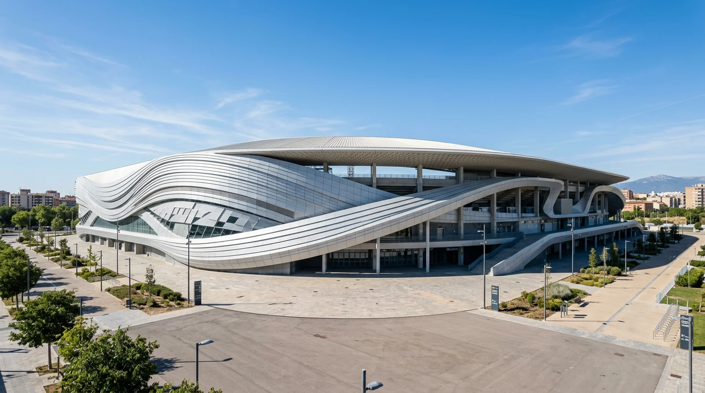
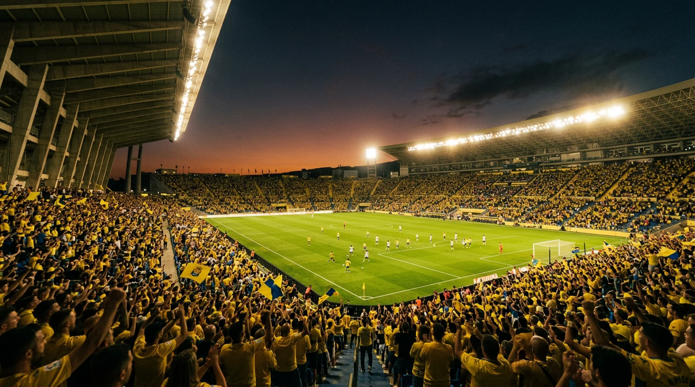
🇲🇦 Morocco
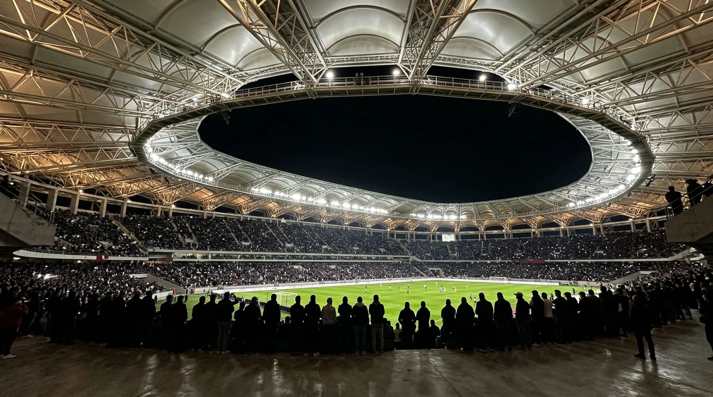
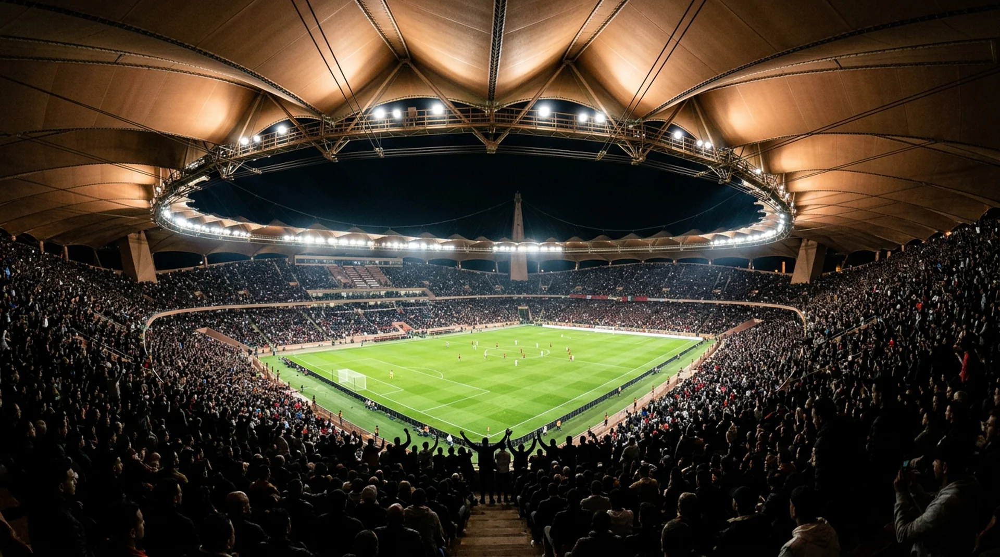
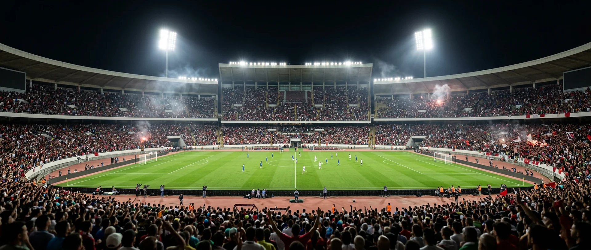
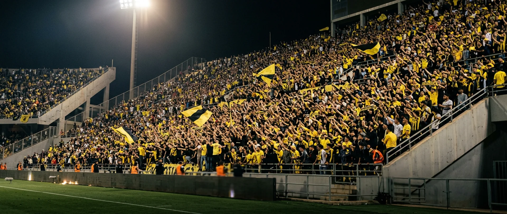
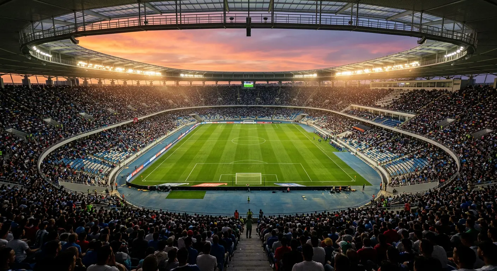
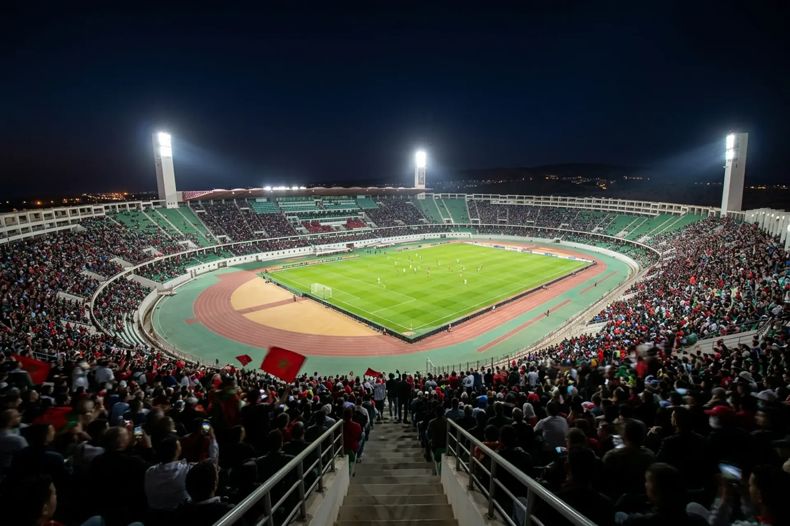
🇵🇹 Portugal
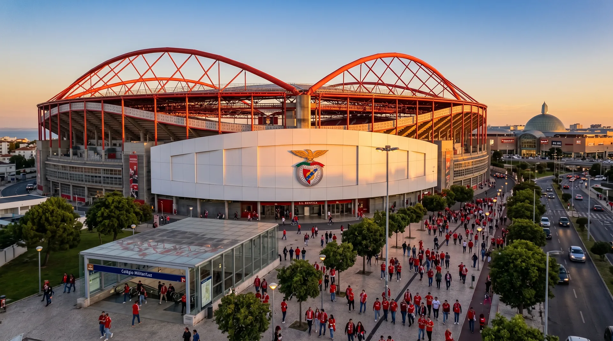
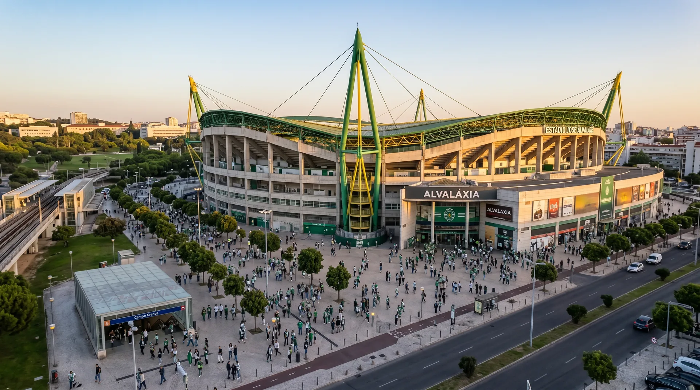
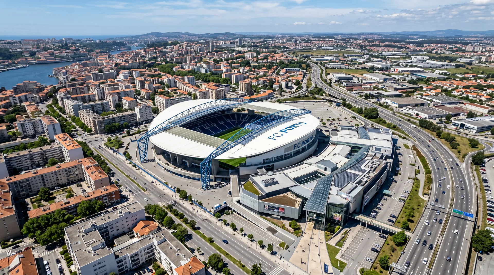
🏆 Centenary Matches
Frequently Asked
Continue Exploring
See every World Cup 2030 stadium, or the full Barcelona travel guide.
Stay Informed
Construction milestones, FIFA final venue confirmations, ticket ballot dates and Barcelona travel tips - straight to your inbox.